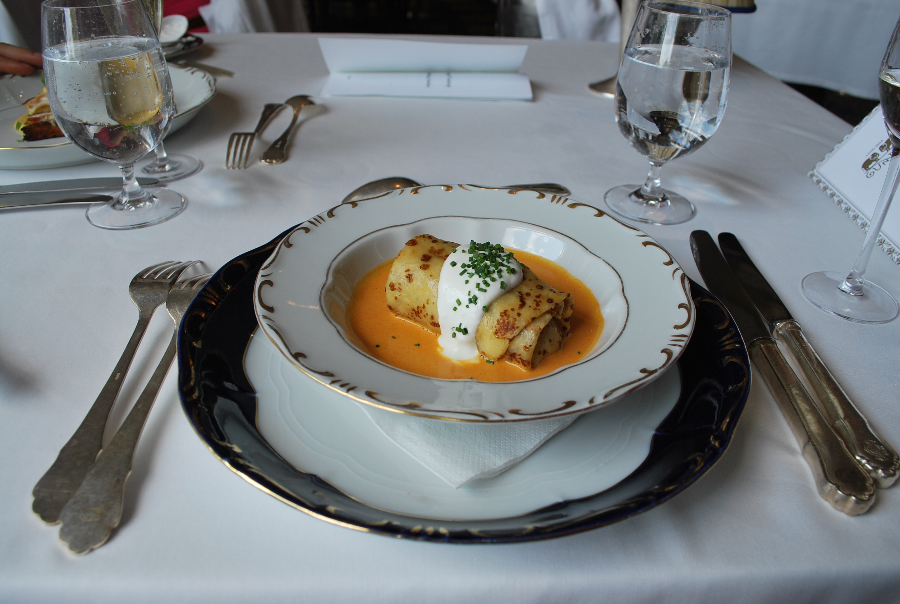
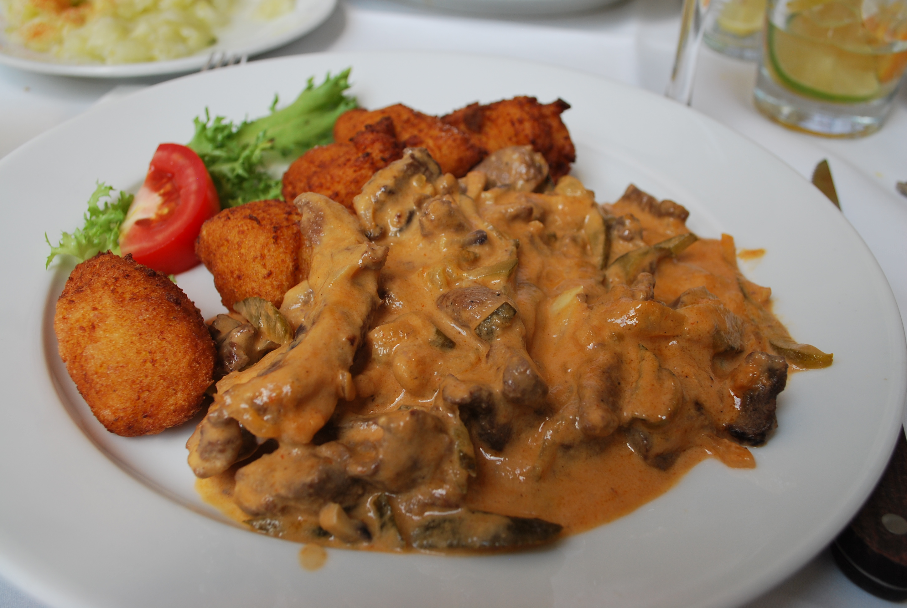
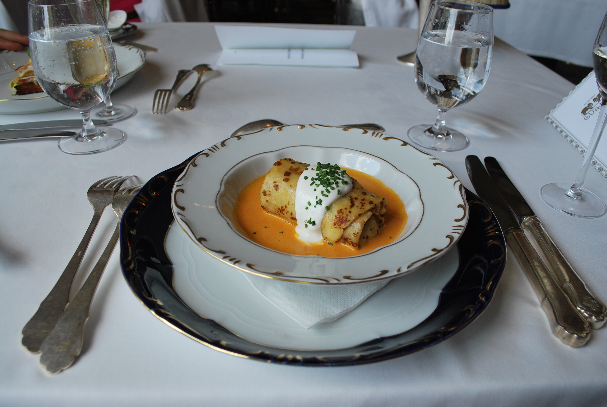
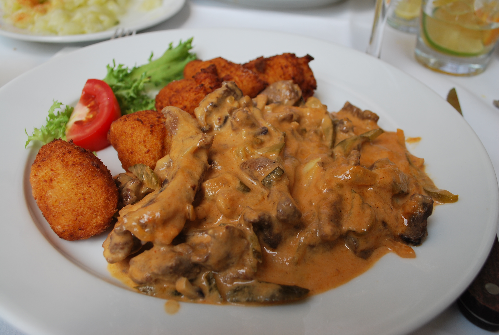

Photography and Video
Content creation has always been an important part of my life. I started a Youtube channel when I was ten years old in 2006 to make anime music videos. I've used a Minolta camera that was built in 1983 for film photograhpy for years because the manual process of producing photographs allows for such a range of outcomes and potential for experimentation. I am also a drone pilot and I love to capture natural settings that I can compliment with downtempo electronic progressions. Some of my favorite things to photograph are sunsets, food, water, people, aniamls, and buildings.


 


